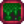

Anéis
Anéis são itens equipáveis que dão aos jogadores benefícios passivos. Quaisquer dois anéis podem ser equipados a qualquer momento. Eles são equipados no inventário do jogador. Anéis também podem ser combinados na Forja.
| Imagem | Nome | Descrição | Efeito | Localização | Ingredientes | Preço de Compra | Preço de Venda |
|---|---|---|---|---|---|---|---|
| Anel de brilho pequeno | Emite uma luz pequena e constante. | Emite luz num raio de 5 ladrilhos. |
|
N/A | N/A | ||
| Anel brilhante | Emite uma luz constante. | Emite luz num raio de 10 ladrilhos. |
|
N/A | N/A | ||
| Pequeno anel com ímã | Aumenta levemente o seu raio para coletar itens. | Aumenta o raio de |
|
N/A | N/A | ||
| Anel-ímã | Aumenta o seu raio para coletar itens. | Aumenta o raio de |
|
N/A | N/A | ||
| Anel de Pedra Luminosa | Emite uma luz constante, e também aumenta seu alcance de coleta de itens. | Combinação dos efeitos do Anel brilhante e do Anel-ímã: Emite luz num raio de 10 ladrilhos e aumenta o raio de |
|
||||
| Anel duro | Corta a duração de efeitos negativos pela metade. | A duração de debuffs é reduzida em 50%. | Artesanato com Nível 1 em |
N/A | |||
| Anel de guerreiro | Ocasionalmente enche quem o usa de "energia de guerreiro" após matar um monstro. | Artesanato com Nível 4 em |
N/A | ||||
| Anel de Espinhos | Quando inimigos te machucarem, eles também receberão danos. | Monstros recebem dano igual ao dano absoluto causado ao jogador. | Artesanato com Nível 7 em |
N/A | |||
| Anel de Ioba | Protege ocasionalmente quem o usa de dano. | Artesanato com Nível 7 em |
N/A | ||||
| Anel de irídio | Brilha, atrai itens, e aumenta dano de ataque em 10%. | Combina o efeito do Anel brilhante, do Anel-ímã, e do Anel de rubi. |
|
N/A | |||
| Anel de música | Toca uma música aleatória que você já tenha ouvido. | Desconhecido. | Impossível de obter | N/A | N/A | ||
| Anel de ametista | Aumenta ricochete em 10%. | N/A | |||||
| Anel de topázio | Aumenta precisão de arma em 10%. | Não faz nada. | N/A | ||||
| Anel de água-marinha | Aumenta chance de dano crítico em 10%. |
|
N/A | ||||
| Anel de jade | Aumenta ataque crítico em 10%. |
|
N/A | ||||
| Anel de esmeralda | Aumenta velocidade de arma em 10%. |
|
N/A | ||||
| Anel de rubi | Aumenta ataque em 10%. |
|
N/A | ||||
| Encantador de gosma | Protege contra danos das gosmas. | Imunidade ao dano das Gosmas e ao debuff  Coberto de gosma | Guilda dos Aventureiros (como recompensa por matar 1000 Gosmas e posteriomente disponível para compra) | N/A | |||
| Anel selvagem | Ganhe um pouco de velocidade toda vez que matar um monstro. | ( |
Guilda dos Aventureiros (como recompensa por matar 150 Espíritos do Vazio e posteriomente disponível para compra) | N/A | |||
| Anel do ladrão | Monstros possuem uma chance maior de deixarem itens. | Monstros dropam itens mais facilmente. | Guilda dos Aventureiros (como recompensa por matar 500 Espíritos da poeira e posteriomente disponível para compra) | N/A | |||
| Anel vampiro | Ganhe um pouco de saúde toda vez que matar um monstro. | Restaura 2 de saúde após matar um monstro. | Guilda dos Aventureiros (como recompensa por matar 200 Morcegos e posteriomente disponível para compra) | N/A | |||
| Anel de Caraguejo | O topo do anel é feito de carapaça de caranguejo encantada. | Guilda dos Aventureiros (como recompensa por matar 60 Caranguejos-pedra e posteriomente disponível para compra) | N/A | ||||
| Anel Napalm | Quando derrotar um inimigo, ele explode. | Monstros derrotados explodem, destruindo objetos e danificando inimigos. Não causa dano ao jogador. | Guilda dos Aventureiros (como recompensa por matar 250 Sepentes e posteriomente disponível para compra) | N/A | |||
| Anel de Casamento | Uma antiga tradição da Cidade de Zuzu... Use para pedir a mão de uma pessoa em casamento. | Permite que dois jogadores se casem no modo Multijogador. | Compre a receita no Carrinho de Viagem por |
N/A | |||
| Anel de Imunidade | A parte de cima do anel é feita de lã roxa encantada. |
|
N/A | N/A | |||
| Anel da Sorte | É dito que o emblema lunar traz sorte para quem o usa. | N/A | N/A | ||||
| Anel de Proteção | Fique invencível por mais tempo depois de tomar dano. | Aumenta o tempo de invencibilidade depois de receber dano em 0.4 segundos. | Baús de tesouro comuns na Caverna do Vulcão | N/A | N/A | ||
| Anel Roubador de Alma | Ganhe um pouco de energia toda vez que matar um monstro. | Restaura 4 de energia após matar um monstro. | Baús de tesouro comuns na Caverna do Vulcão | N/A | N/A | ||
| Anel da Fênix | Uma vez por dia, recupera um pouco de vida após ser derrotado em combate. | Uma vez por dia, restaura 50% da saúde máxima ao ser nocauteado. | Baús de tesouro raros na Caverna do Vulcão | N/A | N/A | ||
| Anel Quente de Java | Aumenta consideravelmente suas chances de encontrar café quando mata monstros. | Aumenta a chance de encontrar Café e Café Expresso Triplo ao matar Monstros. | Baús de tesouro raros na Caverna do Vulcão | N/A | N/A |
Histórico
- 1.3: Anel de Casamento adicionado.
- 1.4: Anel de Caraguejo e Napalm adicionados.
- 1.5: Anel de Espinhos, da Sorte, Quente de Java, de Proteção, Roubador de Alma, da Fênix, de Imunidade e de Pedra Luminosa adicionados